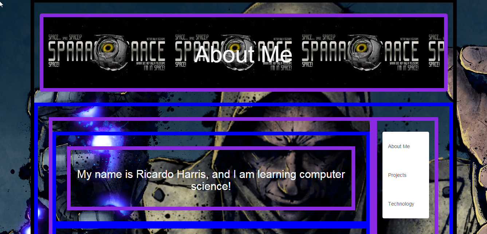

Portfolio 2

This is my second project and my
second portfolio site. My experience with that helped
me make this site. But there's a difference between
the two. As you could probably tell, this site is a
lot more cool tricks and is much better organized.
That is because I am using Bootstrap! "What is bootstrap?",
you may ask. Bootstrap is a free collection of tools
containing HTML and CSS based design templates. It
makes websites super fancy and "responsive" meaning
it makes our websites move to whatever you are using.
Mobile, laptop, desktop, etc. All of th. Like this
one. So, this projects is the same as the first one
but fancier.